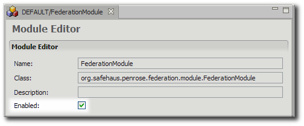

Chapter 11. Configuring Modules
Modules are Java classes which extend the Red Hat Penrose Server functionality. One module is included and configured by default, the Federation Module used for identity federation. Custom modules can be added and supported for Penrose Server.
This chapter explains how to add and enable modules in Penrose Virtual Directory and how to map modules to virtual directory subtrees and entries.
11.1. Adding Modules
Modules are available to a partition, so they are configured with other partition entries.
11.1.1. Adding Modules in Penrose Studio
For custom modules, copy the
.jarinto the/opt/vd-server-2.0/libdirectory so that Penrose Server can access it.In Penrose Server, open the server, and expand the Partitions folder.
Open the partition to which to add the module.
Right-click the Modules folder, and select New Module....
Enter the name of the module entry and the name of the class to use for the module. This information is required.

Enter any parameters required for the Java class.
Optionally, map the module to any virtual directory subtree entries. The information for the module mapping is used only to identify the virtual entry and requires the parameters of an LDAP search query: the base DN to search, the object class or attribute search filter, and the scope of the search.
11.1.2. Adding Modules Manually
The main configuration file for modules is modules.xml in /opt/vd-server-2.0/conf or /opt/vd-server-2.0/partitions/partition_name/DIR-INF/opt/vd-server-2.0/lib.
A complete module configuration has two separate entries in the modules.xml file. The first defines the module, including the entry name, Java class, and any parameters. The second is an optional mapping entry which maps the module to a virtual directory root DSE, base DN, or subtree entry.
Example 11.1, “Annotated Module Entry” shows a complete modules.xml file.
<modules> the main file tag <module name="..."> the module entry <module-class>...</module-class> the Java class name of the module <parameter> optional parameters or settings for the module <param-name>...</param-name> <param-value>...</param-value> </parameter> </module> <module-mapping> a mapping entry <module-name>...</module-name> the name of the module to map <base-dn>...</base-dn> the virtual directory DN to use for the module <filter>...</filter> LDAP search filter to search for entries in the virtual directory <scope>...</scope> scope for the LDAP search </module-mapping> </modules>
Example 11.1. Annotated Module Entry
The only required information to configure a module is the name for the entry and the name of the Java class. For example:
<modules>
<module name="FederationModule">
<module-class>org.safehaus.penrose.federation.module.FederationModule</module-class>
</module>
</modules>IMPORTANT
Always restart Penrose Server after editing the configuration file. For example:
service vd-server restart
The parameters for the modules.xml file are listed in Table 11.1, “Module Entry Parameters”.
| Tag or Parameter | Description | Example |
|---|---|---|
| <module> | The entry tag for a module entry. | |
| name="..." | Gives the name of the module. |
<module
|
| enables="true|false" |
Sets whether the module is enabled. If this argument is not present, then the default value is true.
|
<module name="ExampleModule"
|
| <module-class> |
Contains the Java class for the module; this library must be in /opt/vd-server-2.0/lib.
|
<module-class>org.example.company.mapping.ExampleModule |
| <parameter> | A container entry for any initialization parameters required or used by the module. | |
| <param-name> | The name of the initialization parameter. | |
| <param-value> | The value or setting of the initialization parameter. |
Table 11.1. Module Entry Parameters
11.2. Mapping Modules to Data Entries
The final step when configuring a module in Penrose Studio is creating optional mappings from the module to virtual directory subtrees. Many modules perform background tasks for other Penrose Virtual Directory services, such as modules for synchronization, which apply to an operation. However, it can be useful in some sitiations to have a module which performs tasks within a certain area of the directory. This module mapping configuration matches the module to specific parts of the tree only; this can be useful, for example, for applying a custom caching module to a part of the tree with frequent search operations.
Multiple subtrees can be mapped to a module. In Penrose Studio, this is done by editing the module and adding information for the LDAP search to match the subtree: the base DN, object class or attribute filter, and search scope. As many mapping entries can be added through the editor as required, and these are automatically applied to the module.
In the modules.xml file, this mapping is done by adding a new <module-mapping> entry for every module mapping. The same information as in the Penrose Studio editor — the name of the module, base DN, object class or attribute filter, and search scope — are added as parameters to the entry. For example:
<module-mapping> <module-name>ExampleModule</module-name> <base-dn>ou=people,dc=example,dc=com</base-dn> <filter>(objectclass="inetorgperson")</filter> <scope>subtree</scope> </module-mapping>
The parameters for the module mapping entry are listed in Table 11.2, “Module Mapping Parameters”.
IMPORTANT
Always restart Penrose Server after editing the configuration file. For example:
service vd-server restart
| Tag or Parameter | Description | Example |
|---|---|---|
| <module-mapping> | Identifies a mapping entry. | |
| <module-name> | Gives the name of the module which is being mapped. |
<module-name>ExampleModule</module-name> |
| <base-dn> | Contains the distinguished name of the root entry or subtree entry in the virtual directory being mapped to the module. |
<base-dn>ou=people,dc=example,dc=com</base-dn> |
| <filter> | Contains the LDAP filter to search for the object class or attribute in the mapped subtree entry. |
<filter>(objectclass=organizationalUnit)</filter> |
| <scope> | Defines the scope of the search, meaning how many levels down from the base DN for Penrose Server to search. There are three options: subtree (all the way down), onelevel (only direct children of the entry), and base (only the base DN). |
<scope>onelevel</scope> |
Table 11.2. Module Mapping Parameters
11.3. Enabling and Disabling Modules
Modules can be enabled and disabled quickly in Penrose Studio.
Open the server entry, and expand the Partitions folder.
Open the partition where the module belongs, and then open the Modules folder.
Double-click the module entry to open the entry editor.
Uncheck the Enable checkbox to disable the module or check the box to enable it.
